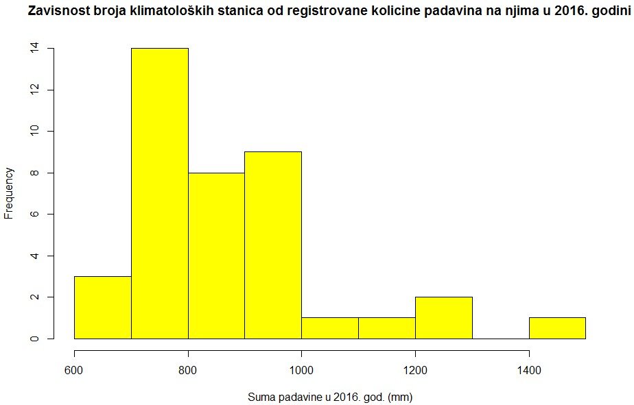
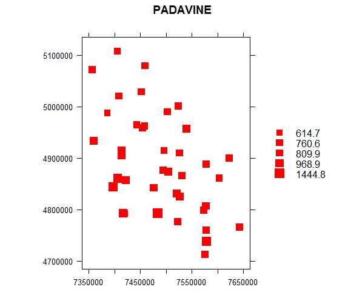
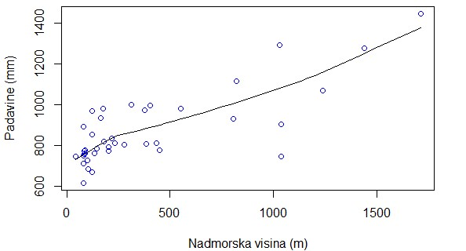
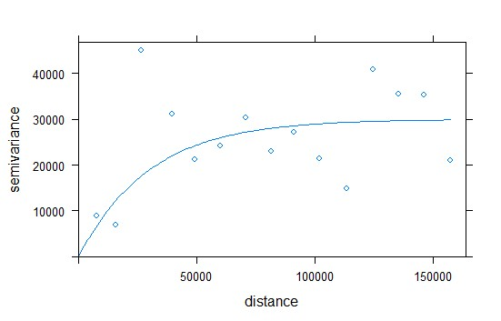
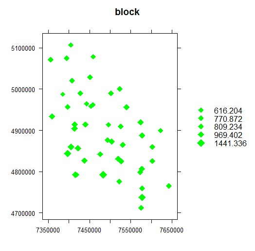
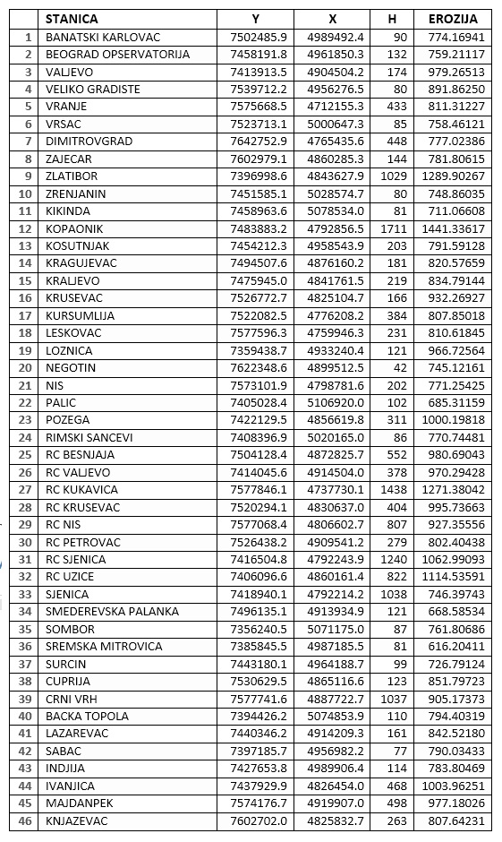

Histogram zavisnosti broja stanica od registrovanih padavina

Prikaz stanica sa količinama padavina

Zavisnost registrovanih padavina od nadmorske visine

Variogram za blok kriging

Predviđene vrednosti blok krigingom za eroziju tla

Tabelarne predviđene vrednosti erozije tla